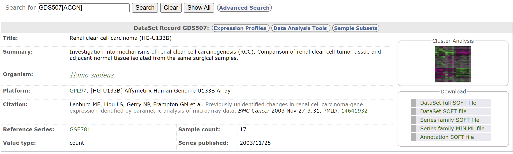
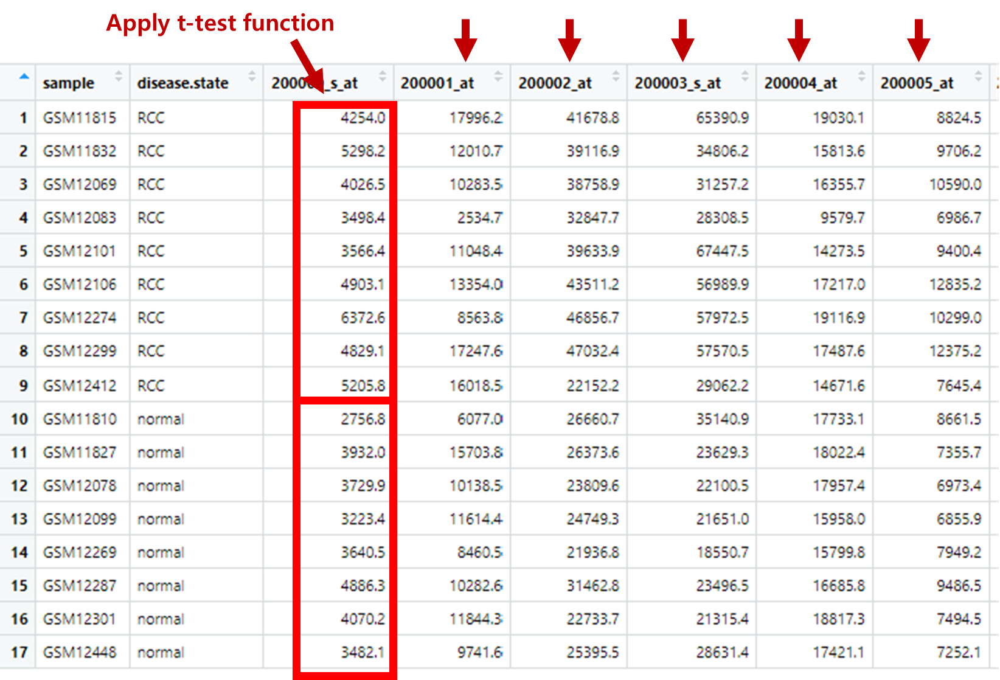
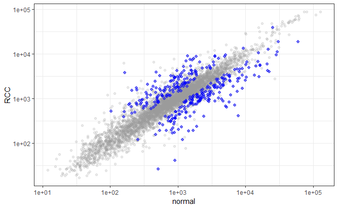

if (!require("BiocManager", quietly = TRUE))
install.packages("BiocManager")
BiocManager::install("Rfastp")8 High-throughput data
8.1 Next-generation sequencing
Next-generation sequencing (NGS) 는 DNA나 RNA 서열을 해독하는 기술로 2005년 개발될 초기에는 기존의 Sanger sequencing과는 다르게 여러 DNA 가닥을 동시에 해독하는 특징으로 “massively-parallel sequencing” 으로 불리우기도 했습니다.

NGS에 대한 자세한 설명은 illuina 사에서 제공하는 튜토리얼의 다음 사이트들을 참고하시기 바랍니다.
(Shor read) NGS 워크플로는 다음과 같은 네 단계를 순차적으로 수행합니다.

각 단계별로 보면 다음과 같습니다.


위 단계 중 Secondary analysis에 해당하는 분석이 일반적으로 우리가 수행하는 RNA-Seq 등의 분석입니다. 시퀀싱 장비에서 읽힌 이미지 정보는 Binary Base Call (BCL) 파일로 변환됩니다. 우리가 일반적으로 다루는 FASTQ 파일은 서열 정보와 quality 정보를 text 형태로 저장한 파일로서 BCL 파일로부터 만들어집니다.

8.2 FASTQ preprocessing
FASTQ 파일에는 타깃 서열정보뿐만아니라 바코드나 인덱스 등의 서열이 포함되어 있습니다.

따라서 분석을 위해서는 위 서열들을 제거하고 quality에 따라서 read 들을 필터링 하는 작업이 필요합니다. 기존에는 linux 스크립트 기반의 소프트웨어들이 사용되었으나 본 강의에서는 Rstudio에서 바로 설치해서 활용할 수 있는 Rfastq 패키지를 사용하겠습니다. Rfastq는 quality control과 polyX trimming, adapter trimming, paired-ed reads merging 등의 기능을 제공하고 있습니다.
examples 디렉토리 생성 후 예시 fastq 파일 다운로드, rfastq 실행으로 로딩과 필터링을 수행합니다. 참고로 Q10은 약 90%의 정확도, Q20은 약 99%의 정확도, Q30은 약 99.9% 정확도를 갖는 read의 개수 입니다.
library(Rfastp)
download.file(url = "https://github.com/greendaygh/kribbr2022/raw/main/fastq/SRR11549087_1.fastq", destfile = "examples/SRR11549087_1.fastq")
fqfiles <- dir(path = "examples", pattern = "*.fastq")
#?rfastp
fastq_report <- rfastp(read1 = file.path("examples", fqfiles[1]),
outputFastq = file.path("examples", paste0("filtered_", fqfiles[1])))
round(qcSummary(fastq_report), 2)8.3 Sequence Read Archive
SRA SRA (Sequence Read Archive)는 High-throughput 시퀀싱 데이터의 공개 데이터베이스 중 가장 큰 규모의 미국 국립 보건원(NIH)의 1차 데이터베이스로서 서열데이터 뿐만 아니라 메타데이터, 유전체, 및 환경 데이터를 포함합니다. NCBI와 EBI(European Bioinformatics Institute), DDBJ(DNA Database of Japan) 간 국제적 제휴를 통해 세 기관에서 제출 받은 데이터는 서로 공유되고 있습니다.
간략한 사용법은 NBK569238 또는 SRA download 문서 이곳을 참고하시기 바랍니다.
데이터를 다운로드 할 수 있는 NCBI SRA Toolkit을 제공하며 이 중 MS Windows 64 bit architecture 를 다운로드 받아 압축을 풀고 사용할 적절한 디렉토리로 옮겨 줍니다. 여기서는 D:\sratoolkit.3.0.0-win64이 곳에 이동해 두었고 전체 디렉토리 구성은 다음과 같습니다.

명령을 어느 디렉토리에서나 사용하고 싶다면 위 경로의 bin 디렉토리를 path로 잡아주는 과정이 필요합니다. 다음 위치로 이동 후 “내PC > 속성 > 고급 시스템 설정 > 환경변수” 를 클릭하면 다음 창이 생성됩니다.
Path를 선택후 편집을 클릭하면 다음 화면이 생성되고 새로만들기를 누른 후 D:\sratoolkit.3.0.0-win64\bin라고 입력해주고 모든 창에서 확인을 눌러주면 되겠습니다.

이제 파일 탐색기로 파일을 다운로드 받을 작업 디렉토리로 이동한 후 주소창에 cmd이라고 입력해서 프롬프트가 있는 명령창을 실행합니다.
fastq-dump.exe를 사용해서 다운로드 받을 수 있으며 최근에는 fasterq-dump를 사용해서 더욱 빠르게 다운로드를 받을 수 있습니다.
뒤에서 설명할 GEO 데이터베이스에서 GSE148719 데이터를 다운로드 해보겠습니다. 위 링크를 클릭해서 들어가면 화면 하단의 SRA Run Selector 라는 링크가 있고 이를 클릭하면 다음과 같은 화면이 보입니다.

Metadata (SraRunTable.txt) 와 Accession list (SRR_Acc_List.txt)를 파일 형태로 다운로드 받은 후 적절한 전처리 후 사용하면 되겠습니다.
prefetch --option-file SRR_Acc_List.txt만약 하나의 fastq 데이터만 다운로드 받을 경우 다음과 같습니다.
prefetch SRR11549076이후 fasta 파일로 변환해 줍니다
fasterq-dump --split-files SRR11549076100000개 read만 별도로 저장
fastq-dump -X 10000 --split-files SRR115490768.4 Gene expression omnibus (GEO)
카이스트 강의
- GEO data 구조를 이해하고 다운로드
- 각 클래스별 사용법 이해
GEO는 microarray, next-generation sequencing 등의 high-throughput 유전체 데이터를 보유한 공공 저장소입니다.
- 대규모 기능유전체 데이터베이스
- 데이터 기탁 쉽게 만들고 고수준 QC 유지
- 사용하기 쉬운 인터페이스 유지
Platform, Sample, Series로 구성되어 있으며 Platform은 사용된 어레이 플랫폼에 대한 설명과 데이터 테이블로 구성되어 있습니다. GPLXXX 형태의 GEO 액세스 번호가 할당되며 하나의 플랫폼은 많은 샘플들에 사용될 수 있습니다. Sample은 개별 샘플이 처리된 조건 등의 설명이 있는 테이블로 구성되며 GSMxxx 형태의 GEO 등록 번호가 할당됩니다. Sample은 하나의 Platform만 참조 가능하며 여러 Series에 포함될 수 있습니다. Series는 관련된 샘플을 그룹화하고 전체 연구의 주요 설명을 제공합니다. GEO 등록 번호 GSExxx가 할당됩니다.

위 세 가지 타입 외에 Datasets 이 있으며 Datasets은 GDSxxx 아이디를 가집니다. 앞서 Series (GSExxx) 데이터가 연구자들이 업로드한 raw 데이터라고 한다면 Datasets (GDSxxx)는 관리자들에 의해 큐레이션된 데이터로 볼 수 있습니다. 브라우져를 통해 쉽게 검색할 수 있습니다. GEO의 상세한 내용은 웹사이트(https://www.ncbi.nlm.nih.gov/geo/info/overview.html)에서도 확인할 수 있습니다.
Bioconductor에서는 GEOquery라는 패키지로 관련 파일들을 다운로드 받을 수 있습니다.
if (!requireNamespace("BiocManager", quietly = TRUE))
install.packages("BiocManager")
BiocManager::install("GEOquery")
library(GEOquery)
#browseVignettes("GEOquery")The GDS class - GDS507 데이터세트는 GEO사이트에서 검색하면 다음과 같이 GPL97 칩을 사용했고 tumor tissue와 normal 샘플간 비교를 위한 연구에서 생산된 데이터입니다. 17개의 샘플로 구성되어 있으며 2003년 생산된 데이터 입니다.

gds <- getGEO(filename=system.file("extdata/GDS507.soft.gz",package="GEOquery"))
class(gds)
methods(class=class(gds))
Table(gds)
Columns(gds)“GDS” 객체를 저장한 후 해당 클래스에 해당하는 객체를 어떻게 활용하면 좋을지 모를때가 많습니다. 위 gds를 출력해보면 일반적으로 보던 data.frame 형태와는 다릅니다. “GDS”라는 클래스를 새로 만들면서 그 구조도 필요한대로 만들어 둔 것입니다. 일반적으로 새로운 클래스를 만들때 해당 클래스 특화된 함수들이 제공되고 이러한 함수를 methods라는 명령어로 찾아볼 수 있습니다. Table(gds)를 보면 data.frame 형태로 22,645개의 row와 19개의 column이 있습니다. 각 컬럼은 17개의 샘플 정보와 ID_REF, IDENTIFIER로 구성됩니다.
각 샘플은 GSM class로 샘플의 실제 측정값과 실험 조건 등 샘플별 정보 포함합니다. 아래 gsm 객체의 Table(gsm) 내용을 보면 컬럼에 있는 VALUE 값이 유전체 발현을 정량화한 값으로, 각 chip에서 해당 probe 서열의 Perfect-Match (PM)과 Mismatch (MM)의 비율인 (logged) PM-MM의 평균입니다.
gsm <- getGEO(filename=system.file("extdata/GSM11805.txt.gz",package="GEOquery"))
methods(class=class(gsm))
head(Meta(gsm))
Table(gsm)
Columns(gsm)GPL class는 사용된 칩의 기본 Annotation 정보로서 아래 Columns(gpl)을 실행하면 유전자이름과 심볼, ID 등 21개의 정보가 출력됩니다.
gpl <- getGEO(filename=system.file("extdata/GPL97.annot.gz",package="GEOquery"))
gpl
methods(class=class(gpl))
Table(gpl)
Columns(gpl)GSE class는 GDS와 유사한 수준의 데이터를 담고있는 클래스로 관련된 샘플과 annotation 들을 모두 포함한 데이터 입니다. Meta 함수로 전체적인 정보를 알 수 있으며 관련된 sample과 platform 정보는 GSMList와 GPLList로 찾을 수 있습니다.
gse <- getGEO(filename=system.file("extdata/GSE781_family.soft.gz",package="GEOquery"))
methods(class=class(gse))
Meta(gse)
head(GSMList(gse))
gsm <- GSMList(gse)[[1]]
Meta(gsm)
Table(gsm)
Columns(gsm)
GPLList(gse)
gpl <- GPLList(gse)[[1]]
class(gpl)8.5 ExpressionSet
카이스트 강의
- Bioconductor에서 제공하는 ExpressionSet 구조와 활용법 이해
Bioconductor는 지놈 데이터를 관리하기 위한 표준화된 데이터 구조 class인 ExpressionSet를 제공합니다. ExpressionSet은 HT assay 데이터와 실험 meta를 포함하고 있으며 앞에서 본 GSE 클래스 데이터를 읽어들일때 특정 옵션을 사용하면 ExpressionSet 클래스로 읽어올 수 있습니다.
 출처
출처?getGEO 도움말 중 Value 세션을 보면 getGEO 함수를 사용할 때 GSEMatrix 옵션을 사용하면 ExpressionSet 형태로 데이터를 읽어올 수 있다고 설명이 되어 있습니다. 아래와 같이 gse2553 데이터의 클래스가 ExpressionSet인 것을 알 수 있습니다.
일부 GSE 데이터셋의 경우 phenoData, meta 데이터만 포함되어 있고 아직 featureData, assayData는 포함되지 않은 것이 많아 보입니다. 이 경우 GSM과 GFL 데이터를 각각 모두 받은 후 분석이 필요합니다.
library(GEOquery)
gse2553 <- getGEO('GSE2553',GSEMatrix=TRUE)
gse2553
class(gse2553)
class(gse2553[[1]])
mygse <- gse2553[[1]]
?ExpressionSet
methods(class=class(mygse))
mypdata <- pData(mygse)
myfdata <- fData(mygse)
myexdata <- exprs(mygse)mypdata
class(myexdata)GDS2eSet 함수를 사용하면 GDS 클래스 데이터를 ExpressionSet class로 변환할 수 있습니다.
gds <- getGEO(filename=system.file("extdata/GDS507.soft.gz",package="GEOquery"))
class(gds)
eset <- GDS2eSet(gds, do.log2=TRUE)
eset
pData(eset)Example
카이스트 강의
- DEG 실습 코드 이해
다음 예제는 GEOquery 패키지에 있는 데이터셋을 활용하여 간단한 DEG 분석을 수행하는 코드로서 DEG 분석의 원리 이해와 해석을 위해 학습하는 예제입니다. 통계(추정과 검정)을 먼저 참고하고 실습해 보아도 좋겠습니다. 먼저 ExpressionSeq으로 변환하지 않고 tidyverse 패키지와 t-test를 활용해서 DEG를 수행합니다. 이 후 ExpressionSeq으로 변환 후 DESeq2 패키지를 사용하여 분석해보겠습니다.
library(tidyverse)
library(skimr)
gds <- getGEO(filename = system.file("extdata/GDS507.soft.gz",package="GEOquery"))
gds
myexp <- Table(gds)[1:5000,]
mypheno <- Columns(gds)
glimpse(myexp)
glimpse(mypheno)
skim(myexp)
str(myexp)샘플들 두 그룹별로 평균을 계산하기 위해서 우선 matrix transpose가 필요합니다. tidyverse는 (대부분의 통계 데이터는) row에 샘플이 위치하고 column에 feature (변수)가 있는 반면 위 myexp는 특성상 샘플이 컬럼에 위치하므로 transpose 수행 후 평균을 계산할 필요가 있습니다. transpose는 long형으로 변환 후 다시 컬럼에 위치할 변수들을 지정해서 wide 형으로 변환하면 됩니다.
## transpose
mydat_tr <- myexp |>
dplyr::select(-IDENTIFIER) |>
pivot_longer(cols = -ID_REF) |>
pivot_wider(names_from = ID_REF, values_from = value) 이제 샘플들이 가진 질병 정보를 변수로 추가해줍니다. 이를 위해서 질병 정보를 가진 mypheno 데이터와 mydat_tr을 sample 이름을 기준으로 병합합니다.
mydat2 <- mypheno |>
dplyr::select(sample, disease.state) |>
left_join(mydat_tr, by = c("sample" = "name"))그룹별로 평균을 계산합니다.
mymean <- mydat2 |>
group_by(disease.state) |>
summarise(across(where(is.numeric), mean))각 유전자별 평균값을 그래프로 분석하기 위해서는 normal, RCC가 변수로 되어야하기 때문에 메트리스를 transpose 시켜줍니다.
mymean2 <- mymean |>
pivot_longer(-disease.state) |>
pivot_wider(names_from=disease.state, values_from = value)두 그룹의 평균 값에 대한 각 유전자(feature)들의 산포도를 그릴 수 있습니다.
ggplot(mymean2, aes(x=normal, y=RCC)) +
geom_point() +
scale_x_log10() +
scale_y_log10()위 데이터는 feature 별로 normal과 RCC 값들의 평균을 가지고 있습니다. 이제 t-test를 통해 발현이 차이가 나는 유전자를 골라야 합니다. 위 평균을 구한 방법과 유사한 방법으로 표준편차 값을 구한 후 t값을 계산할 수 있으나 아래와 같이 tidyverse 타입의 함수를 사용해서 t.test 를 사용할 수도 있습니다. 일반적으로 R에서 t-test는 t-test라는 함수를 사용합니다.

ttestval <- mydat2 |>
summarise(across(where(is.numeric), function(x){
z <- t.test(x[disease.state=="normal"], x[disease.state=="RCC"])
c(z$p.value, z$statistic)
}))
ttestval이제 앞에서 만든 평균값 데이터와 pvalue, tstatistic 등의 값들을 하나의 테이블로 만들기 위해서 위 ttestval 데이터를 transpose 시킨 후 mymean2 데이터와 병합합니다.
ttestval_tr <- ttestval |>
mutate(rnames = c("pvalue", "tstat")) |>
#column_to_rownames(var="rnames") |>
pivot_longer(-rnames) |>
pivot_wider(names_from = rnames)
finaldat <- mymean2 |> left_join(ttestval_tr, by="name")
finaldat유의한 데이터를 선별하고 가시화 합니다. 많은 test를 수행할 때 p-value를 그대로 사용할 경우 multiple testing 문제가 있어서 보정을 해주나 본 예제에서는 적용하지 않겠습니다.
sigdat <- finaldat |>
filter(pvalue < 0.001)
finaldat |>
ggplot(aes(x=normal, y=RCC)) +
geom_point(alpha=0.2, color="#999999") +
scale_y_log10() +
scale_x_log10() +
geom_point(data=sigdat, aes(x=normal, y=RCC), color="blue", alpha=0.5, shape=20, size=3) +
theme_bw()아 결과는 p-value 가 0.001 이하인 probe들을 표현한 결과로서 정확한 결과 도출을 위해서는 multiple testing correction을 수행 후 수정된 유의확율을 이용할 필요가 있습니다.

카이스트 강의
- ExpresionSet 클래스와 DESeq2를 활용한 DEG 실습 코드 이해
library(tidyverse)
library(DESeq2)
library(GEOquery)
gds <- getGEO(filename = system.file("extdata/GDS507.soft.gz",package="GEOquery"))
eset <- GDS2eSet(gds, do.log2=F)
eset
class(eset)
methods(class="ExpressionSet")myexp <- data.frame(exprs(eset))
myfeature <- fData(eset)
mypheno <- pData(eset)
glimpse(myexp)
skim(myexp)
str(myexp)
glimpse(mypheno)library(DESeq2)
?DESeqDataSetFromMatrix
# boxplot
myexp |>
rownames_to_column() |>
pivot_longer(-rowname) |>
ggplot(aes(x=name, y=value)) +
geom_boxplot() +
scale_y_log10()
# log scale
# remove negative values
myexp |>
filter(if_any(is.numeric, ~ . < 0))
# convert into count
myexpint <- myexp |>
mutate(across(where(is.numeric), ~ as.integer(.x)))
# convert to DESeqDataSet class
myexpdeg <- DESeqDataSetFromMatrix(countData = as.matrix(myexpint),
colData = mypheno,
design = ~disease.state)
class(myexpdeg)
# perform analysis
dds <- DESeq(myexpdeg)
# data boxplot
normcounts <- DESeq2::counts(dds, normalized = T)
normcounts |>
as.data.frame() |>
rownames_to_column() |>
pivot_longer(-rowname) |>
ggplot(aes(x = name, y = value)) +
geom_boxplot() +
scale_y_log10()
plotDispEsts(dds)
myres <- DESeq2::results(dds, contrast = c("disease.state", "RCC", "normal"))
summary(myres)
DESeq2::plotMA(myres)8.6 SummarizedExperiment
ExpressionSet은 일반적으로 행이 feature (유전자) 인 마이크로어레이 기반 실험 및 유전자 발현 데이터에 사용되었습니다. 그러나 유전체 분석을 위해서는 유전자 정보 외에도 유전체상의 위치 정보 등이 필요하며 이는 앞서 배운 GenomicRanges 형태의 데이터가 필요합니다. 따라서 최근에는 새로운 버전인 SummarizedExperiment class가 SummarizedExperiment 개발되어 사용되고 있습니다.

library(SummarizedExperiment)
#if (!requireNamespace("BiocManager", quietly = TRUE))
# install.packages("BiocManager")
#BiocManager::install("airway")
library(airway)
data(airway, package="airway")
se <- airway
se
?RangedSummarizedExperiment
# assay data
assay(se)
# Row (features)
rowRanges(se)
# Column (sample)
colData(se)
# Experiment-wide metadata
metadata(se)SummarizedExperiment 생성
nrows <- 200
ncols <- 6
counts <- matrix(runif(nrows * ncols, 1, 1e4), nrows)
rowRanges <- GRanges(rep(c("chr1", "chr2"), c(50, 150)),
IRanges(floor(runif(200, 1e5, 1e6)), width=100),
strand=sample(c("+", "-"), 200, TRUE),
feature_id=sprintf("ID%03d", 1:200))
colData <- DataFrame(Treatment=rep(c("ChIP", "Input"), 3),
row.names=LETTERS[1:6])
se <- SummarizedExperiment(assays=list(counts=counts),
rowRanges=rowRanges, colData=colData)
assay(se)
# Row (regions-of-interest) data
rowRanges(se)
# Column (sample) data
colData(se)
# Experiment-wide metadata
metadata(se)
이 저작물은 크리에이티브 커먼즈 저작자표시-비영리-변경금지 4.0 국제 라이선스에 따라 이용할 수 있습니다.